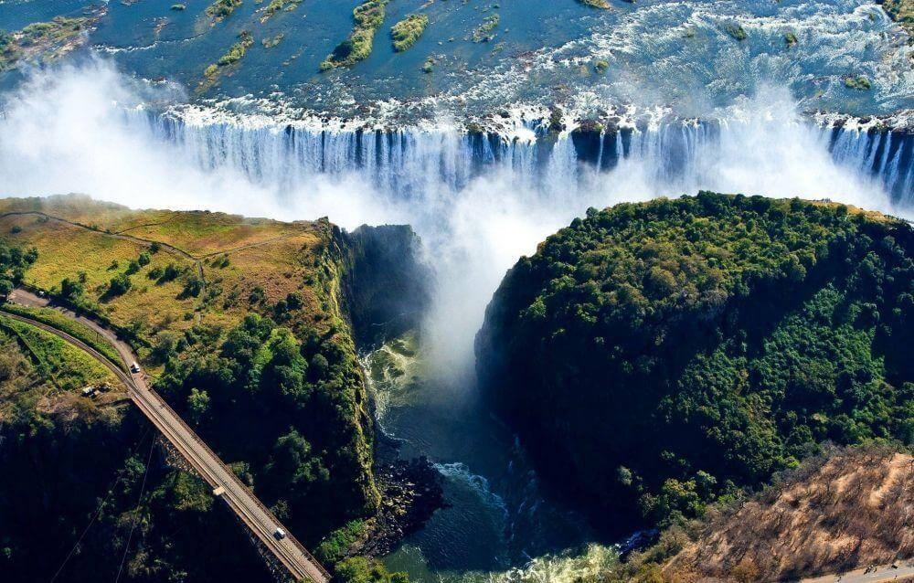
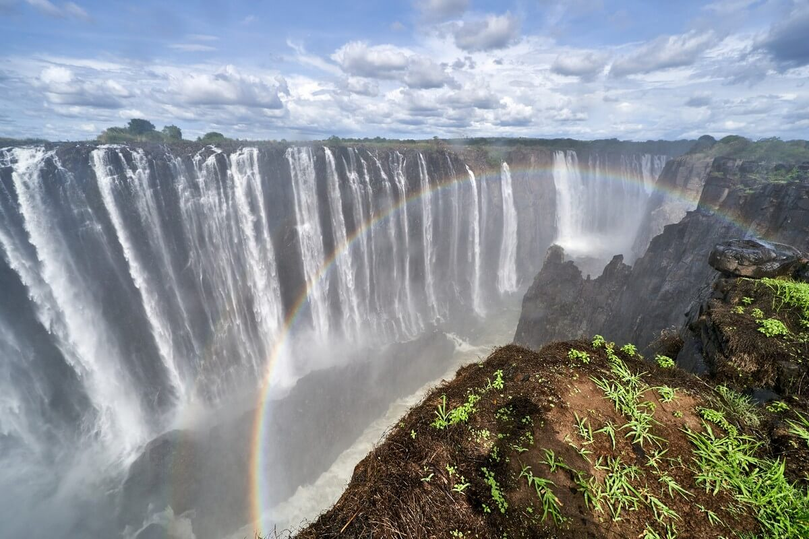
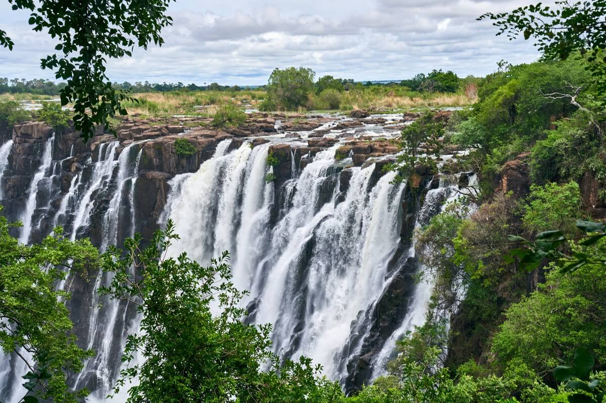
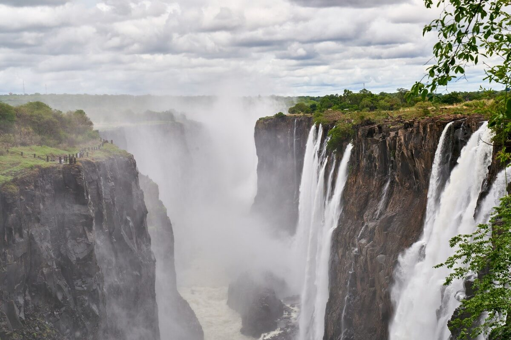
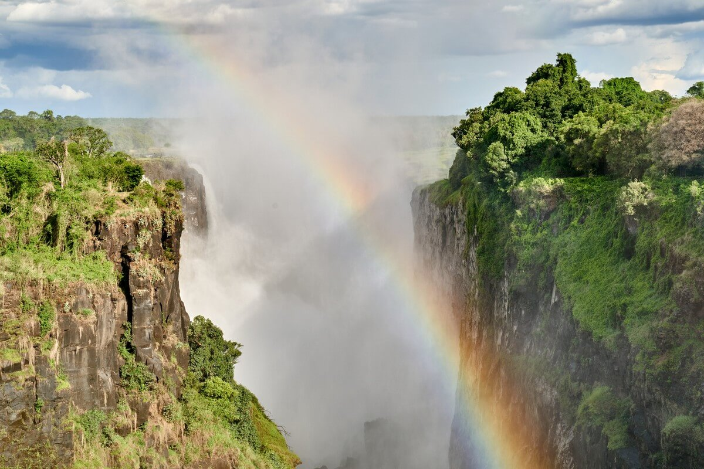
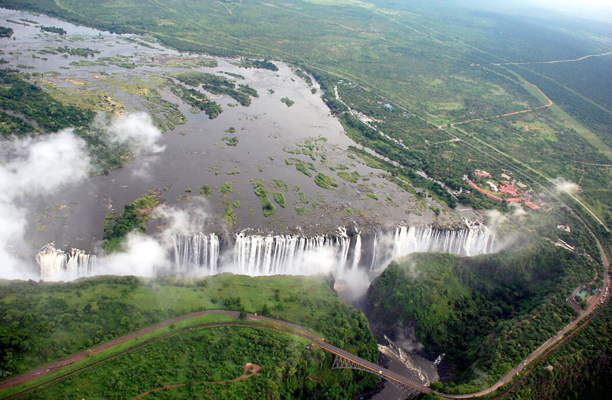
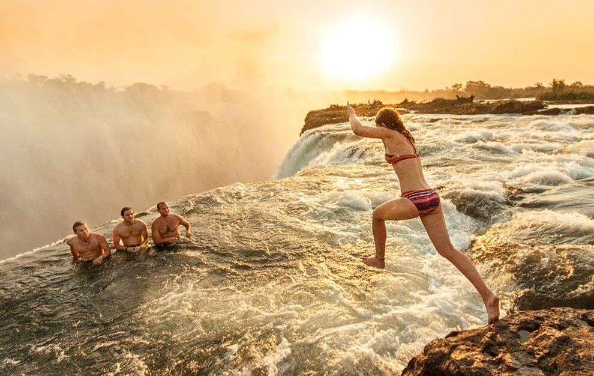
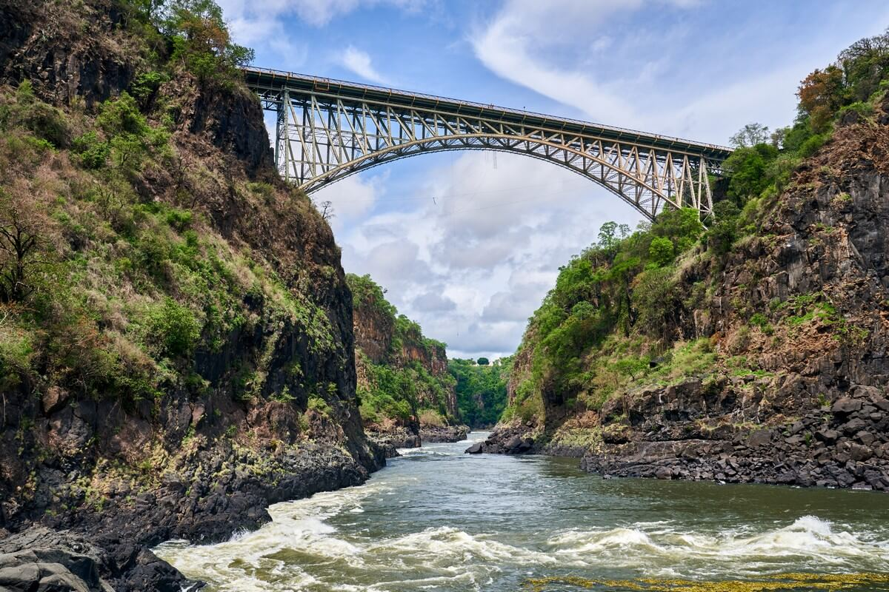
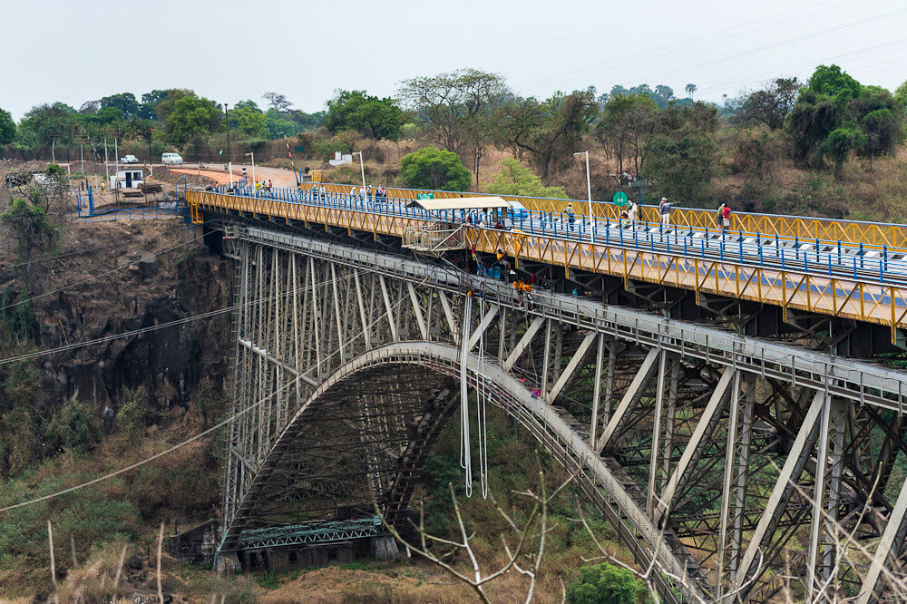
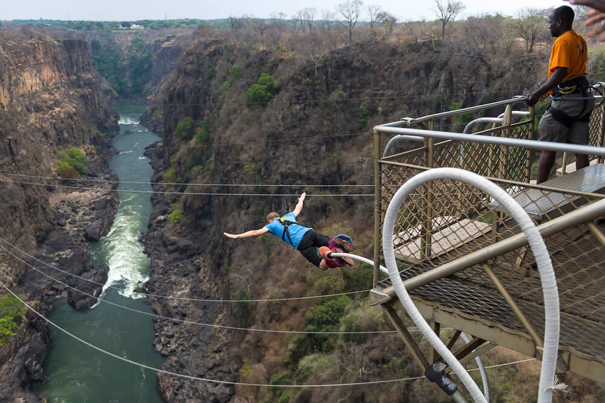

Водопад Виктория причислен к Всемирному наследию ЮНЕСКО и является самым широким водопадом со сплошным потоком. Его высота составляет 120 метров (а это в два раза выше Ниагарского водопада), а ширина – примерно 1800 м.

Водопад Виктория расположен на границе стран Замбии и Зимбабве, на реке Замбези в Южной Африке. Коренные жители Замбии называют его Моси-оа-Тунья, что в переводе означает «гремящий дым». Также от местного населения можно услышать название Чонгуэ («место радуги»).

Водопад Виктория — легендарная достопримечательность, привлекающая туристов со всех концов света. Здесь могучая река Замбези спадает вниз, образуя водяной занавес протяженностью почти 2 километра.
Такое зрелище встречает туристов, приезжающих сюда весной, когда река максимально наполнена водой, так, что каждую секунду 5 миллионов литров воды падают вниз на 100 метров и за 30 км от водопада можно увидеть облака пара, поднимающиеся над водой.

Впервые водопад получил массовую огласку в 1855 году. Во время путешествия по устью реки Замбези, шотландский исследователь Дэвид Ливингстон увидел «красоту, которую невозможно сравнить с чем-либо, виденным в Англии».
Шотландец назвал водопад в честь королевы Виктории и окрестил самым замечательным зрелищем в Африке.

Ровно 50 лет о водопаде Виктория слышали только от путешественников, описывающих его в заметках. В 1905 году через реку Замбези была построена железная дорога в сторону города Булавайо. С тех пор поток туристов только увеличивался, а на стороне Зимбабве появился туристический город Ливингстон.
К середине 19 века дни Британской колониальной империи были сочтены и Южно-Африканская Республика вернула свою независимость. Волна туристов к водопаду Виктория возобновилась в 1980-е - к тому времени ежегодное число туристов возросло примерно до 300 тыс. человек.

Выше водопада Виктория по течению реки Замбези расположены островки разных размеров, по мере приближения к пропасти их число увеличивается. Эти острова разделяют водопад на четыре части.
Правый берег реки известен «прыгающей водой» – так называется поток шириной 35 метров. За островом Боарука ширина водопада примерно 460 метров. Далее следует второй основной поток за островом Ливингстона (530 м). А у левого берега реки Замбези расположен восточный водопад.

Со стороны Зимбабве, у самой пропасти водопада Виктория, есть участок, где течение воды относительно слабое, а узкая скалистая перемычка создает так называемый бассейн. Эта местность известна туристам как «Купель дьявола» и становится популярной с сентября по декабрь, когда уровень воды низкий.
Отчаянные экстремалы плавают в пару метрах от обрыва. Бывали и несчастные случаи, когда пловцов переносило за край, так что следует хорошенько взвесить свое решение перед тем, как лезть в «дьявольскую купель».

Этот мост - граница между Зимбабве и Замбией.

Именно с него прыгают вниз головой любители тарзанки.


ВВЕРХ